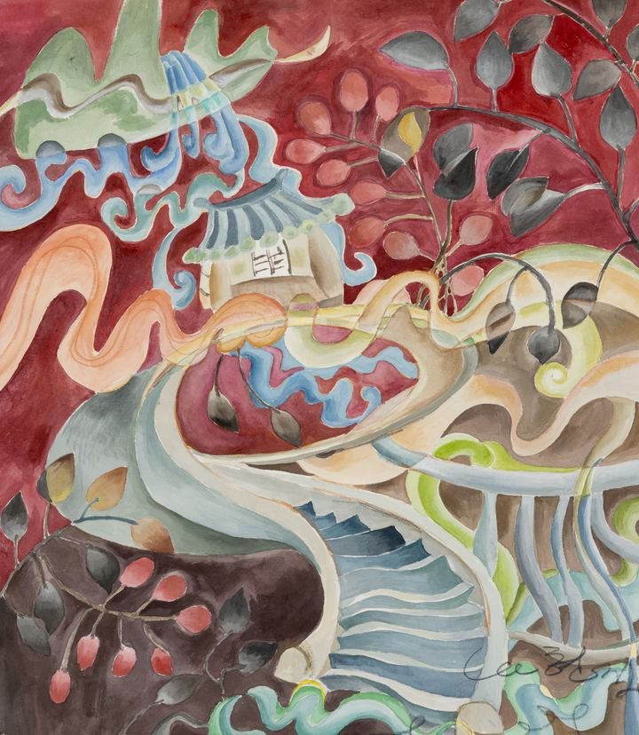

Harmony of Curves: The Mysterious Stairway곡선의 합: 신비로운 계단

Across a deep red ground, a stairway twists its body as it climbs. Its railing never once runs straight but bends like a wave, and in the empty space at the top sits a single house with a blue tiled roof, quiet and still. Above it rises a green mountain, and the blue waterfall pouring from it does not drop straight down but curves softly as it falls. Branches with dark leaves hang at the upper right, and red berries ripen below. Clouds, waves, even the eaves of the roof are all curves. Layering ink and colors into lined Hanji paper and stroking lines over them, I let the whole picture flow as a single breath. This stairway leads nowhere directly. It turns, curves and carries on. We always try to arrive by the fastest straight line, yet water, never contending, flows low and winding and still reaches the sea. It is said that great straightness seems bent. On the winding stairs, I climb slowly, a tiny dot. There is no reason to hurry, and nowhere I must reach. This is not a stair for arriving somewhere; it is a path on which, simply by walking, we have already arrived.
짙은 붉은 바탕 위로 계단 하나가 몸을 비틀며 올라간다. 난간은 한 번도 곧게 뻗지 않고 물결처럼 휘어지며, 계단 끝의 비워진 자리에는 푸른 기와를 얹은 집 한 채가 조용히 앉아 있다. 그 위로 초록 산이 솟고, 산에서 쏟아진 푸른 폭포는 곧장 떨어지지 않고 둥글게 휘어 내려온다. 오른쪽 위로는 검은 잎이 달린 가지가 늘어지고, 아래쪽에는 붉은 열매가 맺혀 있다. 구름도, 물결도, 지붕의 처마선도 모두 곡선이다. 배접한 한지 위에 먹과 채색을 겹겹이 스미게 하고 그 위를 쓰다듬듯 선을 더해, 화면 전체가 하나의 숨결로 이어지게 했다. 이 계단은 어디에도 곧장 닿지 않는다. 돌아가고, 휘어지고, 다시 이어질 뿐이다. 우리는 늘 가장 빠른 직선으로 어딘가에 도착하려 애쓰지만, 물은 다투지 않고 낮은 곳으로 굽이굽이 흘러 끝내 바다에 이른다. 큰 곧음은 오히려 굽은 듯 보인다고 했다. 굽이진 계단 위에서 나는 아주 작은 점이 되어 천천히 오른다. 서두를 이유도, 꼭 닿아야 할 곳도 없다. 이 계단은 도착하기 위한 길이 아니라, 걷는 동안 이미 다다라 있는 길이다.